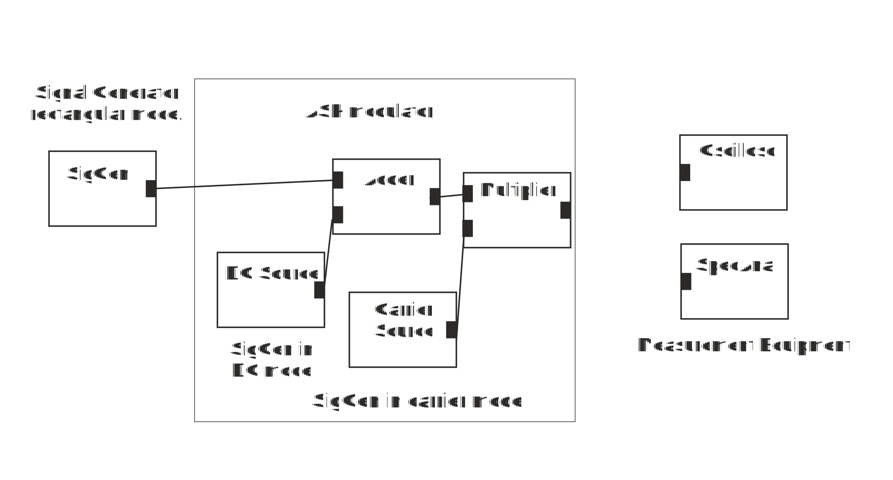

Digital amplitude modulation is known as ASK. Here we study binary ASK. Build up ASK Modulator according to the figure below.
ASK-Modulator
1. Which output corresponds to the original information data to be transmitted with the help of the carrier?
2. Which output correspond to the modulated signal to be transmitted to transmission channel?2. Set SigGen producing carrier waveform to carrier mode and SigGen generating information signal to rectangular mode with amplitude of 1 V and frequency of 10 Hz. What is the period of the output waveform of the signal generator?
3. Assume that high level corresponds to binary “1” and low level to binary “0”. The bit rate would then be:
4. Look at the output of the modulator with oscilloscope. Envelope of the carrier follows
5. What is the approximate duration of each radio signal burst?
6. Change SigGen frequency to 5 Hz. What is now duration of each radio burst?
7. When DC source value is 1 V and rectangular waveform amplitude 1 V the modulation index is
7. When DC source value is 1 V and rectangular waveform amplitude 1 V the modulation index is
8. Reduce rectangular waveform amplitude to 0.5 V. What is now the modulation index?
9. Look at the spectrum of the modulating signal at the output of the signal generator when its frequency is 5Hz. Spectrum consists of
10. Set modulation index back to 100%. Look at the spectrum of the modulated signal. It contains
When you have answered all the questions you can submit your answers.
You passed test. You may now start Exercise 2: Impact of LPF on Signal Shape and Spectrum
Test failed. Consider again answers tat are not correct